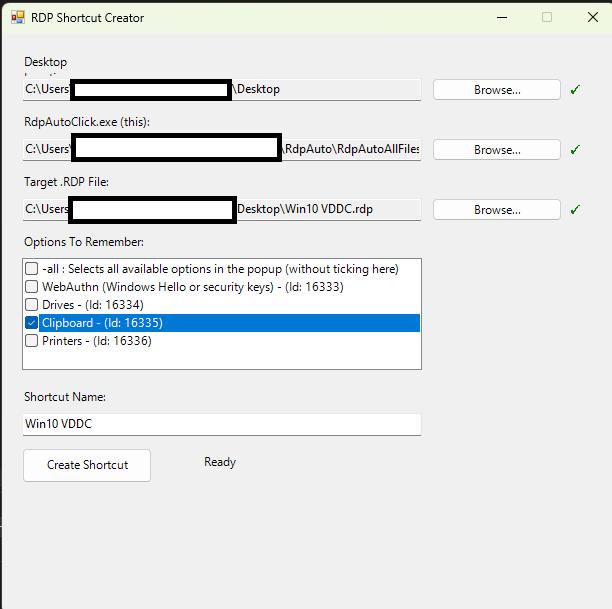

Home / RdpOneClick
RdpOneClick
A Windows utility that automates clicking through the new RDP security prompt, making unsigned .rdp files open in a single click again.
View on GitHubBack to homeThe problem it solves
Recent Windows updates added a security warning dialog when opening unsigned or untrusted .rdp files. It is a sensible default, but for files you trust, it means extra clicks every time.
RdpOneClick removes that friction by automating the prompt, so opening a remote desktop file is quick again.
Key features
- Streamlines opening unsigned/untrusted
.rdpfiles - Automatically clicks through the RDP security prompt
- Lightweight Windows utility with no complicated setup
- Intended only for files you already trust
Tech stack
Screenshots
